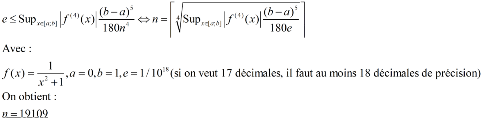

3.14159265358979323
Résultat du calcul :
Temps de calcul :
Résultat du calcul :
Temps de calcul :
17 décimales après la virgule
Le but de ce laboratoire est de développer un programme permettant de calculer l’intégrale de 1/(x2 + 1) sur l’intervalle [0 , 1]. Cette intégrale vaut pi.
Le défi est d'avoir le temps d'exécution le plus court possible tout en trouvant pi à 17 décimales près.
Il faut d'abord choisir le nombre de points que l’on va utiliser pour calculer l’intégrale définie, ensuite cliquer sur « calculer ».
Le nombre d’itérations sur lesquelles sont fait les moyennes peut être modifier dans le code, c’est la variable nbIteration.
Nous avons choisi la méthode de Simpson pour son ordre d’erreur O(h4).
Cependant, les flottants de JavaScript ne permettent pas d’avoir une précision à 17 décimales. Nous sommes donc parties sur la library double.js, qui émule des flottants sur 128 bits (de base sur 64).
Bien sûr, l’utilisation de cette library ralentie beaucoup l’algorithme, pour optimiser un peu, nous utilisons les méthodes statiques de la classe, qui comme expliqué sur le github de la library, sont plus rapides.
Voici notre représentation de pi :
Chaque rectangle a une largeur proportionnelle au chiffre de pi qu'il représente. Sa couleur aussi est relative à son chiffre, variant du bleu pour 0 au rouge pour 9.
JavaScript n'est pas fait pour chercher des nombres avec de telles précisions, il est dommage d’utiliser une librairie tierce pour accomplir cette tâche.
Un calcule d’erreur en partant de l'équation suivante :

Nous donne que la valeur de n devrait être au minimum 19109. Cependant, dans notre cas 205 suffit pour trouver le bon nombre de décimal.